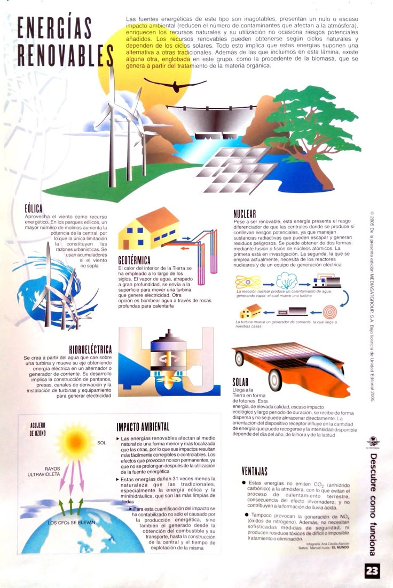

ENERGIAS RENOVABLES
¿Qué son las energías renovables? Las energías renovables son fuentes de energía que se obtienen de recursos naturales que se regeneran de manera continua, como el sol, el viento, el agua y la biomasa. A diferencia de los combustibles fósiles, estas fuentes no se agotan con el uso y tienen un impacto ambiental mucho menor. Por ejemplo, la energía solar utiliza paneles fotovoltaicos para convertir la luz del sol en electricidad, mientras que la energía eólica aprovecha la fuerza del viento mediante turbinas. Estas energías son fundamentales para un futuro sostenible.
¿Cuáles son las principales causas del desperdicio de alimentos? Las causas del desperdicio de alimentos son diversas y abarcan desde la producción hasta el consumo. En la etapa de producción, las pérdidas pueden deberse a plagas, enfermedades y condiciones climáticas adversas. En los hogares, la falta de planificación en las compras y el almacenamiento inadecuado son factores clave. Además, las fechas de caducidad mal interpretadas y las porciones grandes en restaurantes contribuyen al problema. A nivel global, las políticas restrictivas sobre la donación de alimentos también juegan un papel importante.
¿Por qué son importantes las energías renovables? Las energías renovables son esenciales para combatir el cambio climático, ya que no generan emisiones de gases de efecto invernadero durante su uso. Además, ayudan a reducir la dependencia de los combustibles fósiles, que son limitados y altamente contaminantes. También fomentan la creación de empleos verdes y contribuyen al desarrollo de tecnologías innovadoras. En países como Costa Rica, las energías renovables ya representan la mayor parte de su matriz energética, demostrando su viabilidad y beneficios
¿Cuáles son los principales tipos de energías renovables? Existen varios tipos de energías renovables, entre las más comunes están: la energía solar, que utiliza la radiación del sol; la energía eólica, que aprovecha el viento; la hidroeléctrica, que utiliza el movimiento del agua; la geotérmica, que extrae calor del subsuelo terrestre; y la biomasa, que utiliza materia orgánica para generar energía. Cada tipo tiene aplicaciones específicas y ventajas según las características del lugar donde se implementa.
¿Qué ventajas tienen las energías renovables? Las energías renovables ofrecen múltiples ventajas, como la reducción de emisiones contaminantes, la disminución de la dependencia energética de otros países y la generación de empleos en sectores sostenibles. Además, son inagotables y contribuyen a la conservación del medio ambiente. Aunque su implementación inicial puede ser costosa, los beneficios a largo plazo superan ampliamente los costos
¿Qué desafíos enfrentan las energías renovables? A pesar de sus beneficios, las energías renovables enfrentan desafíos como la intermitencia de algunas fuentes (por ejemplo, el sol no brilla todo el tiempo y el viento no siempre sopla). También requieren inversiones iniciales significativas y, en algunos casos, infraestructura especializada. Sin embargo, los avances tecnológicos están ayudando a superar estos obstáculos y a hacerlas más accesibles.
.¿Cómo pueden los gobiernos fomentar el uso de energías renovables? Los gobiernos pueden implementar políticas que incentiven la inversión en energías renovables, como subsidios para la instalación de paneles solares o turbinas eólicas. También pueden establecer metas de reducción de emisiones y promover campañas de concienciación sobre los beneficios de estas energías. Además, la colaboración internacional es clave para compartir tecnologías y recursos.
¿Qué papel juegan las empresas en la transición hacia energías renovables? Las empresas tienen un papel crucial en la adopción de energías renovables. Pueden invertir en tecnologías limpias, optimizar sus procesos para reducir el consumo de energía y promover prácticas sostenibles entre sus empleados y clientes. Además, muchas empresas están liderando iniciativas para alcanzar la neutralidad de carbono, demostrando que la sostenibilidad es compatible con el éxito empresarial.
¿Cómo podemos los individuos contribuir al uso de energías renovables? Los individuos pueden apoyar el uso de energías renovables adoptando prácticas como instalar paneles solares en sus hogares, optar por proveedores de energía verde y reducir su consumo energético. También pueden participar en campañas de concienciación y exigir a sus gobiernos y empresas que prioricen las energías limpias. Cada acción cuenta para construir un futuro más sostenible.
.jpg)
.jpg)
.jpg)
.jpg)
.jpg)
| Videos | Articulo | Infografia |
|  |
Redes sociales